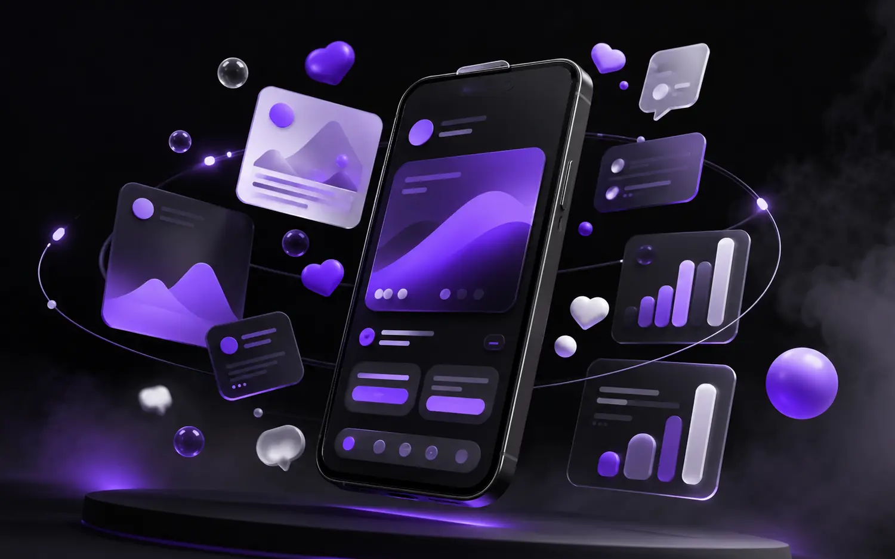

WellMax insights
Ideas for brands
ready to move.
Practical thinking across strategy, design, digital marketing and content—written for ambitious teams.
Strategy · 8 min
01How to Build a Brand Strategy People Remember
A practical framework for positioning, purpose and identity that keeps every brand decision connected.
Read article ↗Design · 7 min
02Packaging Design That Wins Attention and Trust
How hierarchy, structure and brand storytelling turn packaging into a powerful sales tool.
Read article ↗
Social · 9 minBuild a Social Media System, Not Just a Feed
Create a channel strategy that balances attention, consistency, community and measurable growth.
Read article ↗Performance · 8 min
04Paid Media and Email: A Smarter Growth Loop
Connect targeting, creative, landing pages and follow-up to turn paid reach into lasting relationships.
Read article ↗Digital · 10 min
05What Makes a Business Website Actually Work?
The essential principles behind clear, responsive websites that earn trust and create action.
Read article ↗Content · 7 min
06Find a Brand Voice That Sounds Like You
Build a practical voice system that makes every headline, caption and campaign feel unmistakably yours.
Read article ↗Need a creative partner?